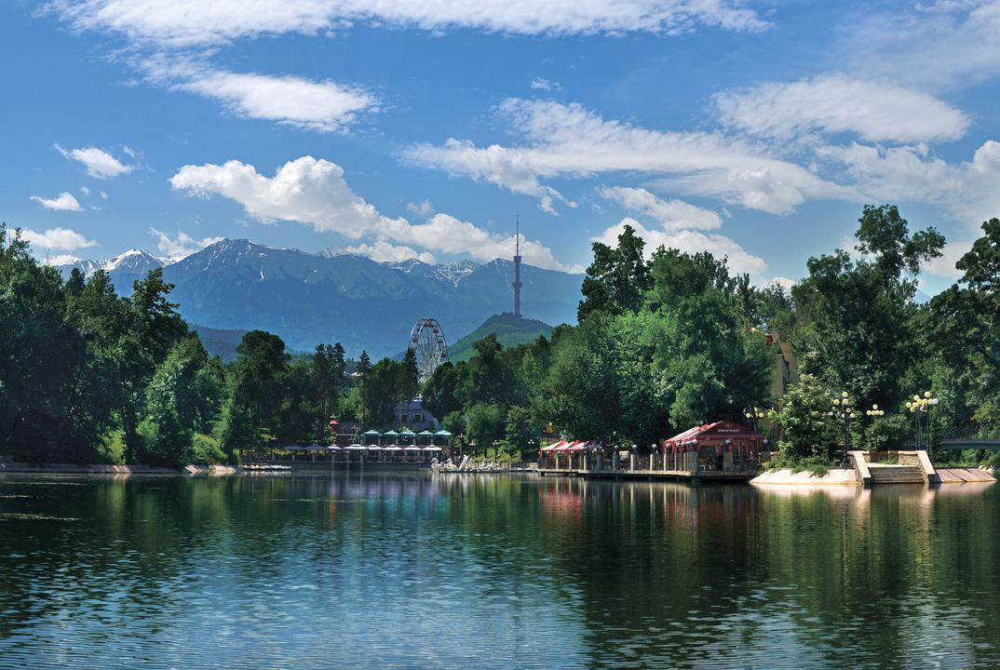
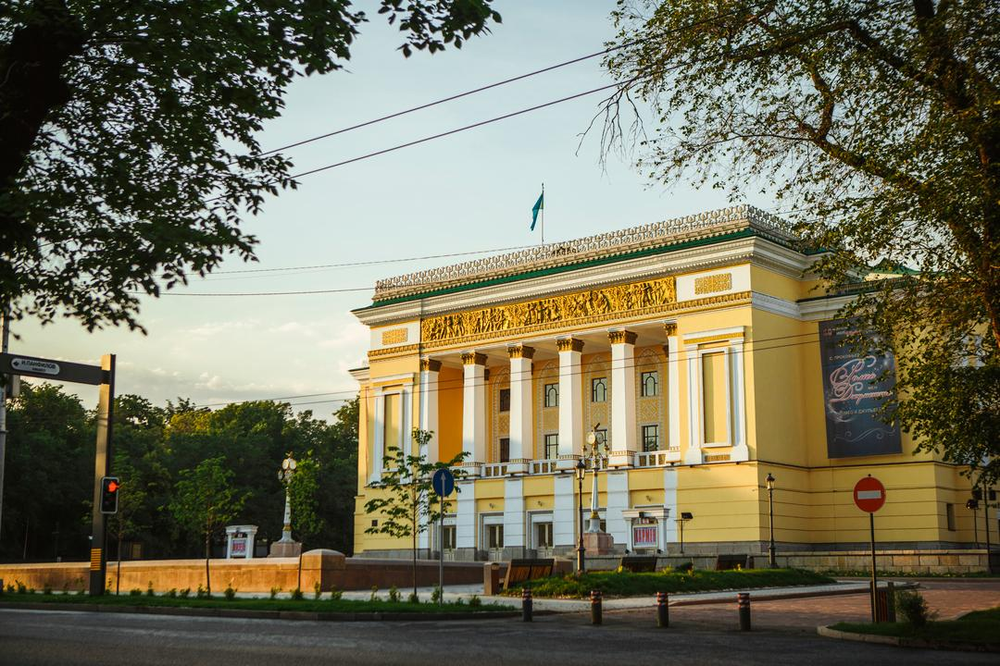
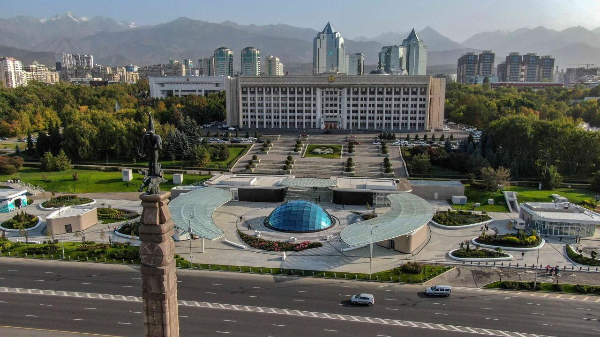
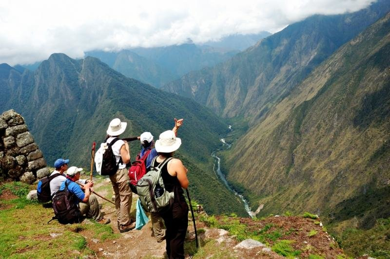
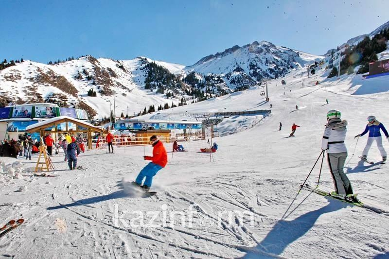
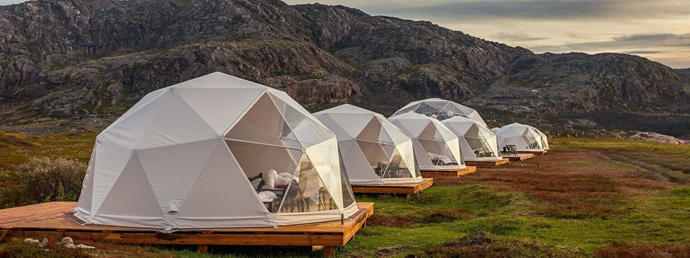

Nestled between Europe and Asia, Almaty is Kazakhstan’s largest city that is both literally and culturally rich. The city first came to global prominence as one of the many stops on The Silk Road, as merchants crossed countries and continents to trade. Almaty is known as the “Golden Triangle” in Kazakhstan for its trio of major natural attractions:
Located near the massive Tian Shan Mountain range, Almaty is described as a “majestic city full of surprises, from charming scenic views to luxury shopping experiences.”
Almaty is reported to now extend about 20 km in all directions from its centre and is considered to be one of the most beautiful cities of Kazakhstan, with wide tree-lined streets, numerous parks and orchards, amid a backdrop of mountains.
  Tourism is a key industry in Almaty and is a major source of foreign exchange earnings and employment for low-skilled workers. The main interest of foreign tourists is ecotourism – mountain hiking and river rafting in summer and skiing in winter.
  According to third quarter 2021 figures released by Almaty's Department of Tourism, the number of tourists totaled 842,900 (a 64.9 percent increase), of which 95, 700 were foreign tourists (a 8.2 percent increase) and 747,200 were domestic tourists (a 76.8 percent increase). The number of foreign tourists in Almaty was projected to reach pre-pandemic levels by 2022.
More information about the tourism in Almaty can be found on the Website of Department of Tourism of Almaty city.